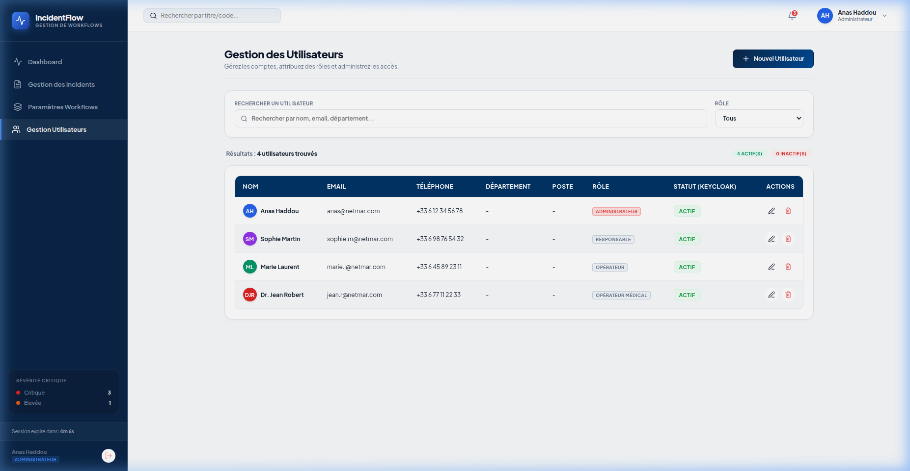

Gestion des Utilisateurs
Gérez les comptes des collaborateurs, attribuez les rôles applicatifs et activez ou désactivez les accès.

Rôles Applicatifs
L'application IncidentFlow gère quatre rôles prédéfinis :
- Administrateur : Contrôle total, gestion de tous les utilisateurs, configuration complète des workflows.
- Responsable : Vision de supervision globale, attribution des incidents aux opérateurs compétents.
- Opérateur : Traite, qualifie et résout les incidents standards affectés.
- Opérateur Médical : Opérateur spécialisé pour la prise en charge et clôture exclusive des incidents médicaux.
Fonctionnalités Clés
Formulaire d'ajout pour saisir le nom, l'email, le mot de passe et affecter immédiatement un rôle.
Bouton de bascule de statut. Les comptes désactivés reçoivent un message d'avertissement à la connexion.
Keycloak Webhook : Gestion des Événements IAM
Lorsque Keycloak modifie le profil d'un utilisateur (Ex: déconnexion globale ou blocage), il émet un événement webhook capturé par AuthController. Ce dernier blacklist le token de session dans Redis et désactive le compte localement :
@PostMapping("/keycloak-event")
public ResponseEntity<?> handleKeycloakEvent(@RequestBody Map<String, Object> event) {
String type = (String) event.get("type");
String email = (String) event.get("email");
// Détection de Déconnexion / Désactivation
if ("LOGOUT".equalsIgnoreCase(type) || "DISABLE_USER".equalsIgnoreCase(type)) {
String redisKey = "blacklist:user:" + email;
// Enregistrer dans Redis pendant 1 heure
redisTemplate.opsForValue().set(redisKey, "true", 1, TimeUnit.HOURS);
if ("DISABLE_USER".equalsIgnoreCase(type)) {
User user = userRepository.findByEmail(email).orElse(null);
if (user != null) {
user.setActive(false); // Désactivation en base
userRepository.save(user);
}
}
}
return ResponseEntity.ok().build();
}Helper UI : Détecteur de Verrouillage Majuscule (Caps Lock)
Pour améliorer l'expérience utilisateur et éviter les erreurs de saisie de mot de passe lors de la connexion ou de la création de compte, l'interface écoute l'état de la touche Majuscule :
// Vérifie l'état de Caps Lock lors de la frappe
const handlePasswordKeyDown = (e) => {
const capsLockOn = e.getModifierState('CapsLock');
setIsCapsLockOn(capsLockOn); // Alerte visuelle si true
};